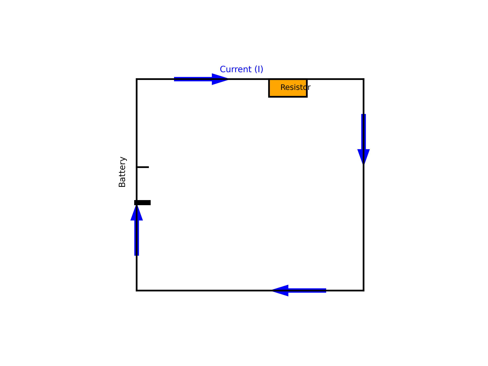
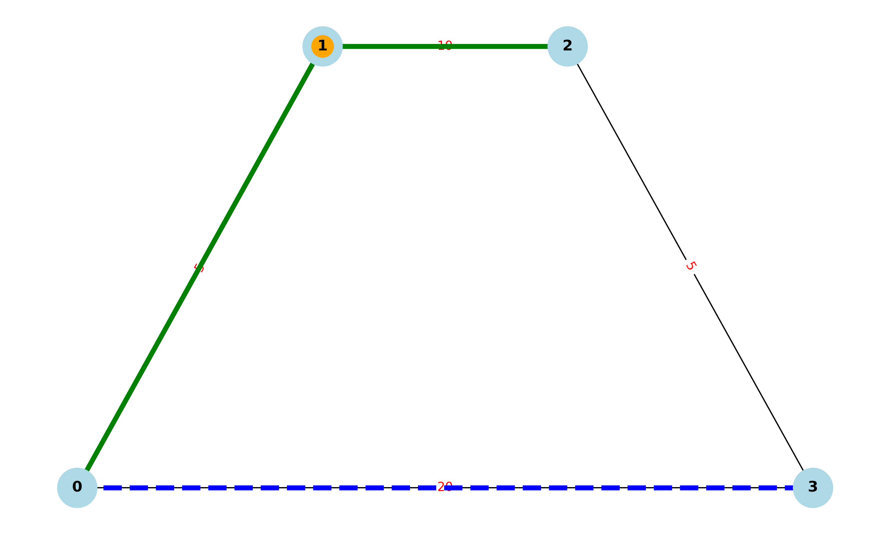

What is an Electric Circuit?
An electric circuit is a closed loop or pathway that allows electric current to flow. It typically includes:
- A power source (e.g., battery or generator)
- Conductive wires to carry the current
- One or more electrical components (e.g., resistors, bulbs, switches)
For a circuit to work, it must be complete and unbroken so that charges can move continuously. Circuits are fundamental in powering electrical devices and systems.

Calculating Equivalent Resistance Using Graph Theory
In graph theory, an electric circuit can be represented as a graph where:
- Nodes (vertices) represent circuit junctions.
- Edges represent resistors, each with a weight equal to its resistance.
To compute the equivalent resistance between two nodes, graph-based methods such as the following are used:
Algorithm Steps:
- Model the circuit as an undirected weighted graph (resistors are bidirectional).
- Create the conductance matrix (inverse of resistance for each edge).
- Build the Laplacian matrix (L) of the graph, where:
L = D - AD: Degree matrix (sum of conductances connected to each node)A: Adjacency matrix of conductances- Use the Moore-Penrose pseudoinverse of the Laplacian (
L⁺) to find the equivalent resistance: R_eq(a, b) = L⁺[a,a] + L⁺[b,b] - 2 * L⁺[a,b]
This method is powerful for analyzing complex resistor networks, especially in software and computational circuits.

Function CalculateEquivalentResistance(graph, node_start, node_end): While number of edges > 1: For each node N in graph:
# --- Series Reduction ---
If N has exactly two neighbors (A and B) and N is not start or end:
R1 = resistance between N and A
R2 = resistance between N and B
Replace edges (A-N) and (N-B) with a single edge (A-B) of resistance R1 + R2
Remove node N
# --- Parallel Reduction ---
For each pair of nodes (U, V) with multiple edges:
Combine all resistors R1, R2, ..., Rn between U and V
R_parallel = 1 / (1/R1 + 1/R2 + ... + 1/Rn)
Replace multiple edges with a single edge (U-V) of resistance R_parallel
Return resistance between node_start and node_end
## Pseudocode Explanation: Series and Parallel Resistor Reduction
This pseudocode outlines an algorithm to compute the equivalent resistance between two nodes in a resistor network by identifying and reducing series and parallel connections.

Key Concepts:
-
Graph Representation:
The resistor network is modeled as an undirected weighted graph, where: -
Nodes represent circuit junctions.
-
Edges represent resistors, with weights equal to resistance values.
-
Series Reduction:
A node connected to exactly two other nodes (and not being a start or end terminal) is a series node. -
The resistors connected in series can be combined by summing their resistances: $$ [ R_{\text{eq}} = R_1 + R_2 ] $$
-
Parallel Reduction:
If multiple resistors exist between the same pair of nodes, they are in parallel. - These can be combined using the reciprocal rule: $$ [ \frac{1}{R_{\text{eq}}} = \frac{1}{R_1} + \frac{1}{R_2} + \dots + \frac{1}{R_n} ] $$
Algorithm Steps:
- Loop through the graph until only one edge remains between the source and target nodes.
- Identify series nodes and reduce them by combining connected resistors.
- Identify parallel edges between node pairs and replace them with a single equivalent resistor.
- Repeat the reduction until a single equivalent resistance is found between the start and end nodes.
This approach simplifies complex resistor networks and is especially useful in automated circuit analysis and educational simulations.